Summer Vacation 2019
Click on any thumbnail to view the full-size image
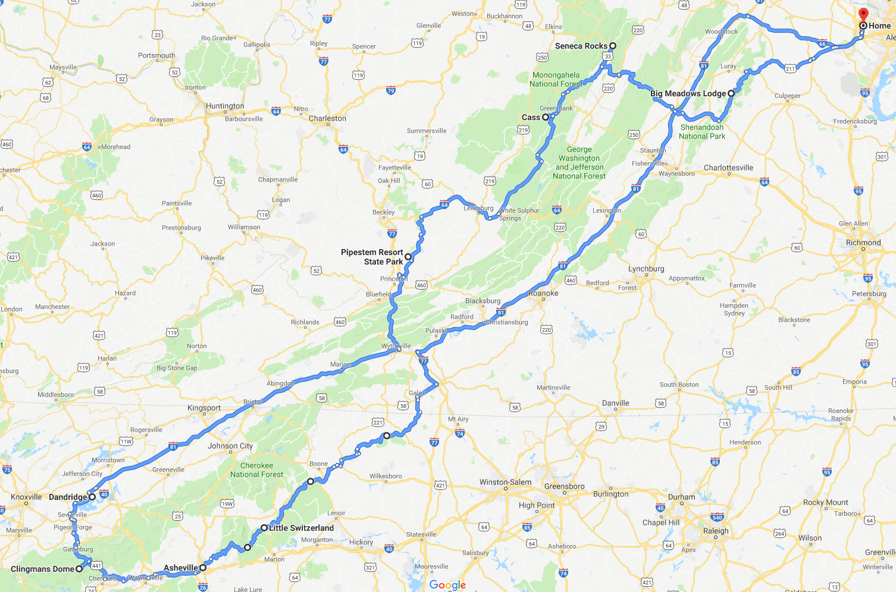
Aug 5
- Drive to Hillsville, VA, about 5 hours
- King suite w/sofabed at Hampton Inn (RESERVATION #81408382)
Aug 6
- 30 min drive to Blue Ridge Parkway "Highlands" region northern entrance, milepost 218
- Approx 90 mins to milepost 272, E.B. Jeffress Park, one-mile hike to Cascades waterfall
- Approx 40 mins to milepost 291, town of Blowing Rock, restaurants for lunch, etc.
- Milepost 294, Price Lake estate house tour, explore gardens, trails, etc.
- Milepost 297, Julian Price park and Price Lake overlook
- Approx 20 mins to Milepost 304, Linn Cove Viaduct, visitor center, hiking trails
- Approx 50 mins to milepost 334, Switzerland Inn, Chalet Restaurant for dinner
- A-Frame cottage at Switzerland Inn, 3 nights (RESERVATION #14709564)
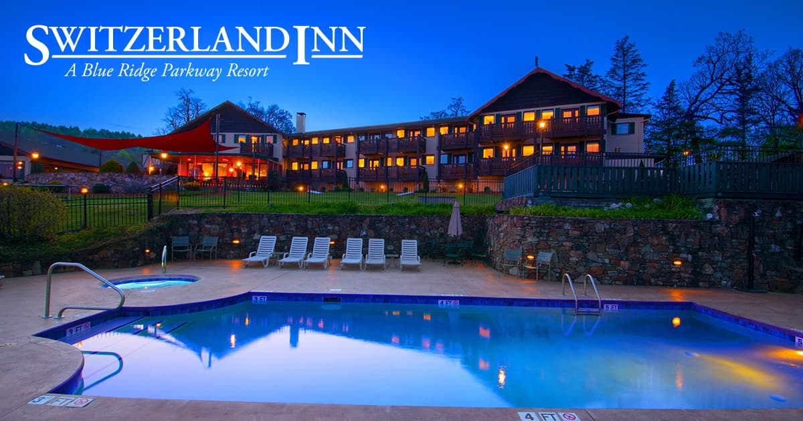
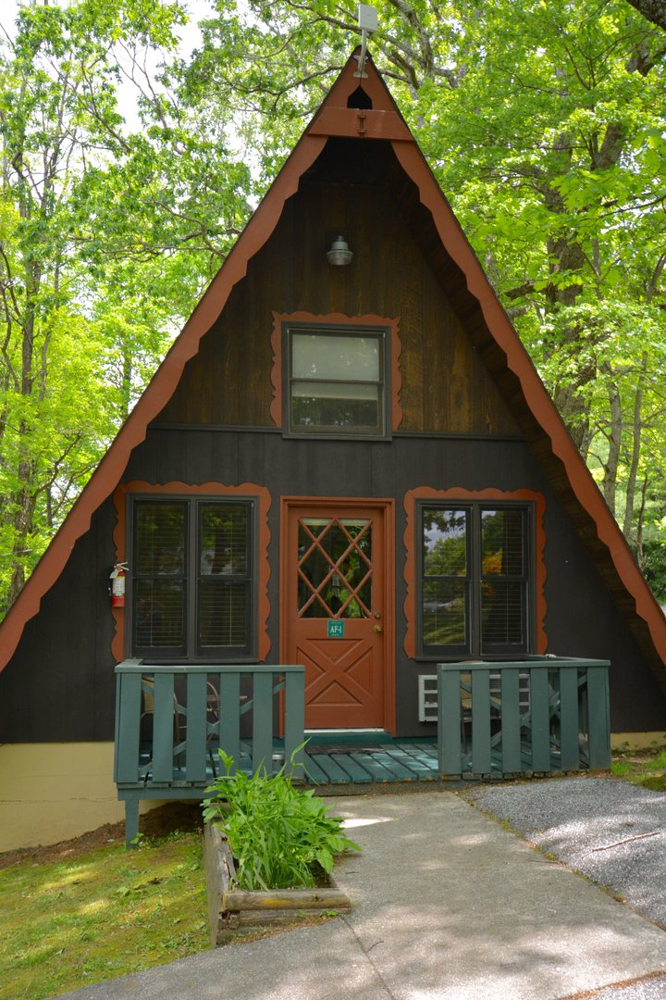
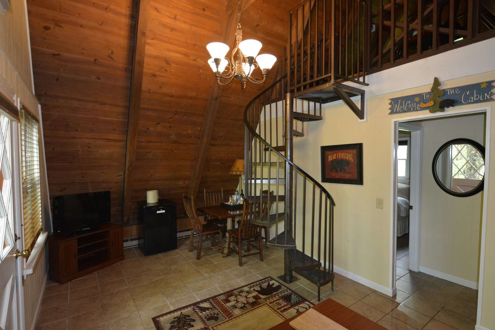
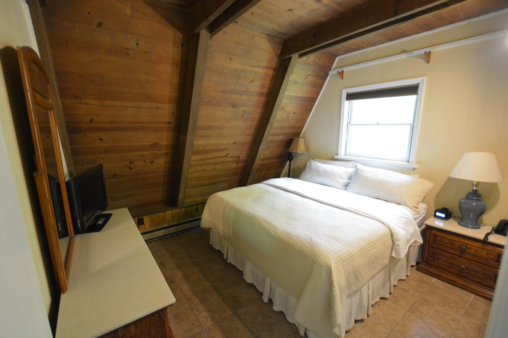

Aug 7
- Approx 50 mins to milepost 306, Grandfather Mountain, restaurant, museum, hiking trails, drive to the peak
- Approx 30 mins to milepost 317, Linville Falls, visitor center, hiking trails, overlook of gorge and falls
- Approx 25 mins to milepost 331, NC Museum of Minerals
- Approx 15 mins to Switzerland Inn
Aug 8
- Approx 15 mins to Crabtree Falls, 2.5 mile hike to falls
- Approx 45 mins to Mt. Mitchell summit, highest peak in eastern North America
- observation deck, restaurant for lunch
- Approx 30 mins to milepost 364, Craggy Gardens Visitor Center
- Approx 1 hour to Switzerland Inn
- Get packed and ready for EARLY checkout the next morning
Aug 9
- Breakfast at 7am, Depart by 8am
- Approx 90 mins on Blue Ridge Parkway to Asheville, NC.
- Arrive at Biltmore House visitor center by 9:45
- Pick up tickets at will-call (RESERVATION #HAMN2397469)
- Bus ride to house, 10:00-10:15
- Self-guided audio tour, 2 hours, 10:30-12:30
- Lunch 12:30 to 1:30
- Behind the scenes tour, 1 hour, 1:30 to 2:30
- Rooftop tour, 1 hour, 3:00 to 4:00
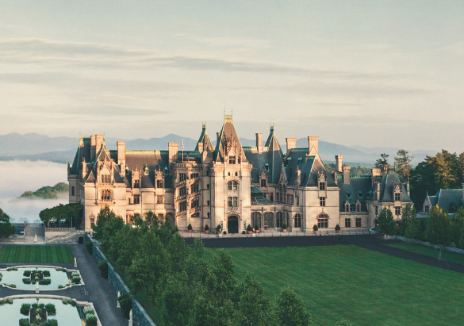
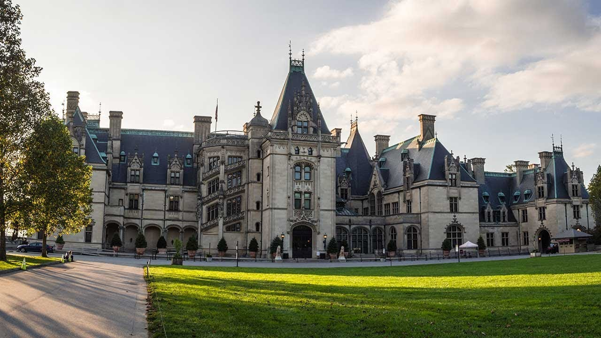
- King suite w/sofabed at Fairfield Inn (RESERVATION #85824593)
Aug 10
- Finish last segment of Blue Ridge Parkway (about 3 hours)
- Lunch in Cherokee, NC
- Drive to Clingman's Dome in Great Smoky Mountains National Park (about 1 hour)
- Explore Clingman's Dome summit and observation tower
- Drive to Dandridge, TN (about 2 hours)
- Dinner at "Angelo's at the Point" on Douglass Lake, Dandridge
- King suite w/sofabed at Hampton Inn Dandridge (RESERVATION #81136126)
Aug 11
- Approx 6 hours to Cass, WV (pop. 52)
- Note: Poor cell phone reception in Cass area. Bring paper maps.
- Stay in restored railroad company house, 225 Main St, Cass (RESERVATION #22564817)
- Check in at park headquarters at company store
- Call park office before 5pm at 304-456-4300 x101 if cannot arrive by 5pm
Aug 12
- Explore Greenbank Observatory, tour, museum, etc.
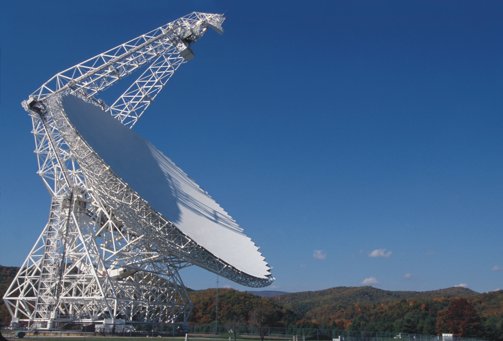
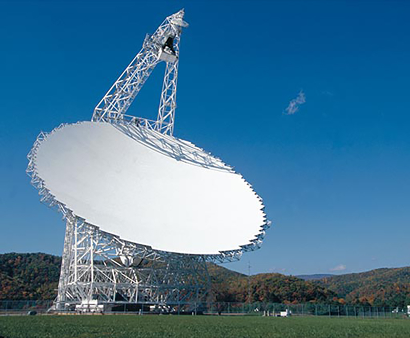
- Option: Approx 1.5 hours to Seneca Rocks and Spruce Knob (Highest Peak in WV)
- Stay in Cass for the night
Aug 13
- Cass Railroad to Bald Knob, RESERVATION #NDFPM3B5
- Note: Poor cell phone reception in Cass. Must print out paper tickets ahead of time.
- Arrive at station by 11:30
- Train leaves at noon
- Lunch on train
- 30 min layover at Bald Knob peak
- Return to Cass approx 4:30-5:00pm
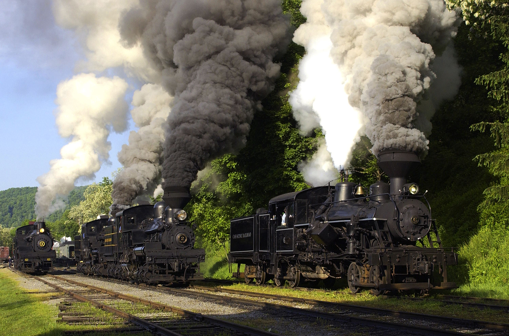
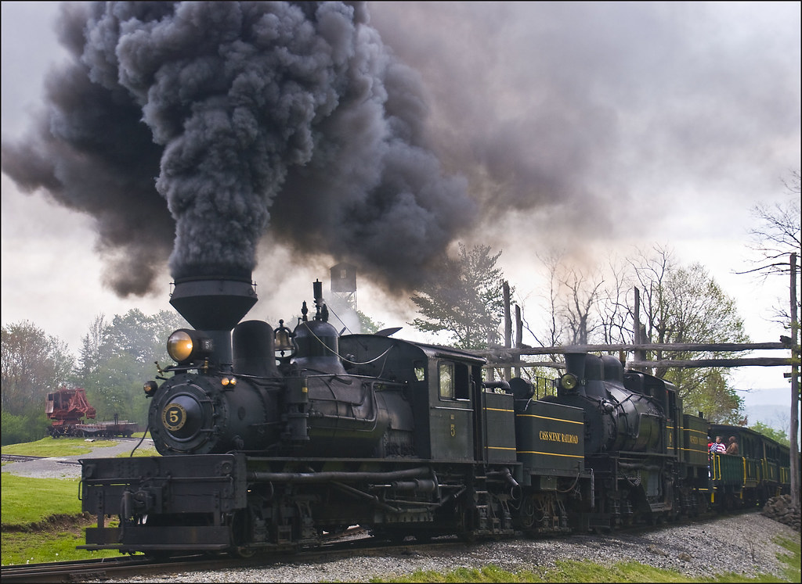
- Stay in Cass for the night
Aug 14
- Approx 4 hours to home
- Option: Stop along the way at Seneca Rocks and Spruce Knob (Highest Peak in WV)
{kind=link}
{kind=link}
{kind=link}
{kind=link}
{kind=link}
{kind=link}
{kind=link}
{kind=link}
{kind=link}
{kind=link}
{kind=link}